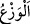
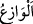
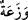
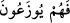

yolculukta askerleri huzuruna çıkarıldı ve toplandı.
Fethu’r-Rahmân’da der ki: “Bu yolculuk, Istahr’dan Yemen’edir. Istahr, İran
beldelerinden bir beldeydi. Burası, Süleyman (a.s.)’ın saltanat merkezi idi.”
Âyette cinlerin önce zikredilmesi, daha işin başında Süleyman (a.s.)’ın mülkünde
kuvvetinin kemâl üzere olduğunu bildirmek içindir. Çünkü cinler azgın, toplanmaktan ve
emre âmâde olmaktan uzak bir topluluktur.
“Hepsi bir arada (onun tarafından) düzenli olarak sevk ediliyordu.”
“
” ayrılma ve dağılmasını önlemek, men etmek demektir. “
” ordunun
ayrılmasına ve dağılmasına mâni olan, halkın zulüm ve fesadını önleyen kimsedir.
Çoğulu “
” gelir.
Yâni kalabalık orduların durumu gibi birleşmeleri, toplanmaları ve dağılmamaları
için onların başı ile sonu kontrol edilip denetim altında tutulur. Süleyman (a.s.)’ın
ordularının her bölüğünün dağılmalarına mâni olmak için baş ve sonlarını gözetleyip
kollayan muhâfızları vardı.
Bu âyette şuna işâret edilmiştir: Onlar (Hz. Süleyman’ın askerleri), sayılarının
çokluğu sebebiyle başıboş olup dağılmazlardı. Disiplinleri o derecede idi ki
askerlerden hiç biri kendileri için belirlenmiş yerden ileri geri (başka bir yere)
gidemezdi.
Mûtad olduğu üzere bunun safların düzenlenmesi için olması da mümkündür. Nitekim
el-Muhtâr’da “
” safın önüne geçip askerleri ileri geri çekerek safı düzelten
kimsedir” der.
Orduların bir arada toplanmaları son taraflarının sevk edilmesi ile de olduğu halde o
değil de ön taraflarının kontrol edilip tutulması özel olarak zikredilmiştir. Çünkü
orduların arka tarafları ön taraflarının yapabildiği hızlı yürüyüşe güç yetiremez. Elbette
bu durum Süleyman (a.s.) onları havada rüzgar ile yürütmediği zaman geçerlidir.
Keşfü’l-esrâr’da der ki: “
” yâni tâatten çıkmaktan men’ olunurlar ve bu hal
üzere tutulurlar. Nitekim başka bir âyette şöyle buyrulur: “Onlardan kim
buyruğumuzdan sapsa, ona alevli bir azâb tattırırdık” (Sebe’, 34/12)”
Rivâyet edildiğine göre Süleyman (a.s.)’ın ordugâhı yüze yüz fersah ebadındaydı.
Yirmi beşi insanlar için, yirmi beşi cinler için, yirmi beşi kuşlar için, yirmi beşi vahşi
hayvanlar içindi. Süleyman (a.s.)’ın ağaç üzerine camdan yapılmış bin evi, o evlerde üç
yüz nikahlı hanımı, yedi yüz de câriyesi vardı. Cinler ona altın ve ibrişimden bir fersah
eninde ve bir fersah boyunda bir yaygı örmüşlerdi. Altın minberi/tahtı onun ortasına
konur ve Süleyman (a.s.) onun üzerine otururdu. Etrafında altı yüz bin altın ve gümüş
kürsî/iskemle vardı. Peygamberler altın iskemlelere, âlimler gümüş iskemlelere
otururlardı. İnsanlar bunların etrafında, cinler ve şeytanlar da insanların etrafında saf
tutarlardı. Üzerine güneş düşmemesi için kuşlar kanatlarıyla onu gölgelerdi. Saba
rüzgarı yaygıyı kaldırır Süleyman (a.s.) bu şekilde bir aylık yol kat ederdi.
Yine rivâyet edilmiştir ki Süleyman (a.s.) fırtınaya emreder, o da onu taşırdı. Rüzgara